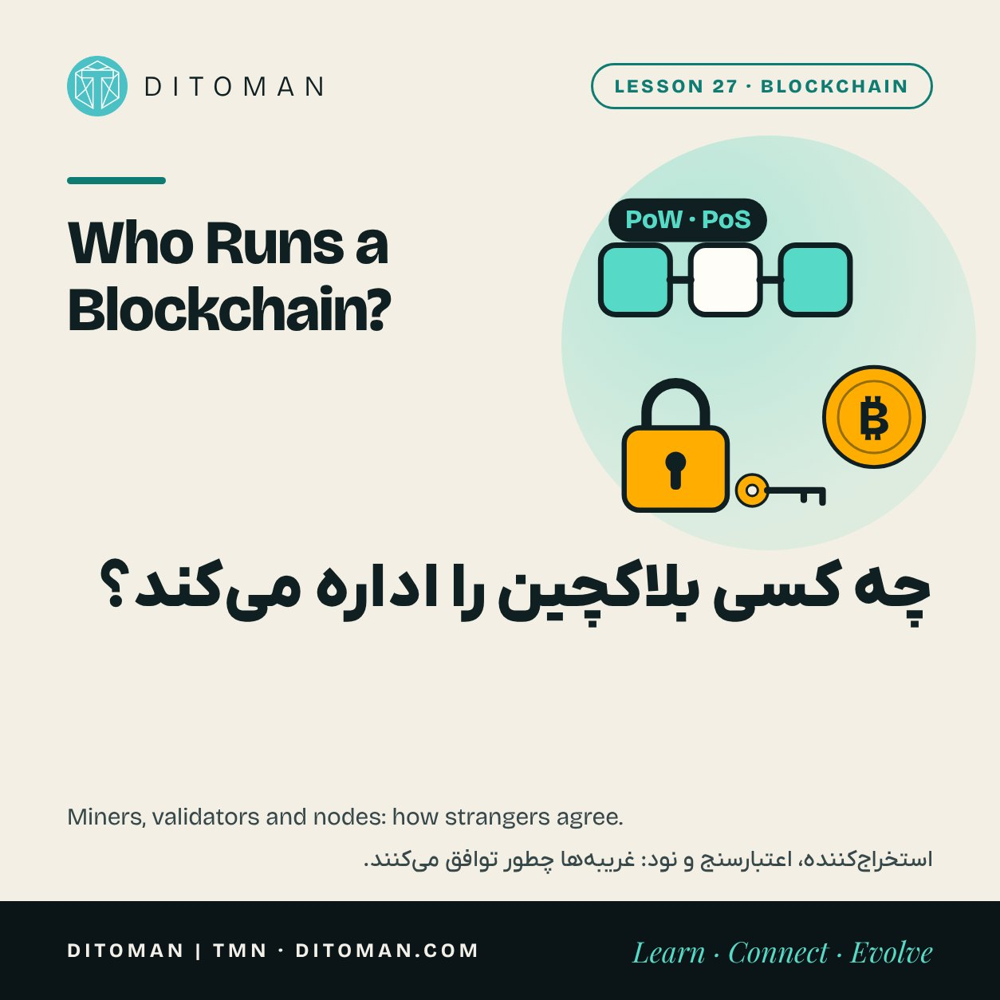

谁在运行区块链？
چه کسی بلاکچین را اداره میکند؟
没有哪家公司拥有比特币或以太坊，但它们的账本仍在正确地增长。本课解释矿工和验证者如何让账本保持诚实，以及为什么这需要付出代价。
هیچ شرکتی مالک بیتکوین یا اتریوم نیست، ولی دفترشان درست بزرگ میشود. این درس توضیح میدهد استخراجکنندهها و اعتبارسنجها چطور دفتر را صادق نگه میدارند و چرا این کار هزینه دارد.
课程内容
محتوای درس
可用英文或波斯文阅读本课。
درس را به فارسی یا انگلیسی بخوانید.
银行有所有者、经理和电话号码。公共区块链一样都没有。世界各地成千上万台计算机持有同一本账本，没有人负责管它。
那么谁来决定哪些交易下一个进入？又为什么有人会作弊或不作弊？
01. 要解决的问题
任何账本都需要一条规则：所有人必须对下一页达成一致。如果两个人可以添加两个不同的下一页，钱就可能被花两次。
银行通过充当唯一的裁判来解决这个问题。区块链通过一种方法来解决，称为共识机制，让许多互不信任的陌生人达成一致。
02. 工作量证明：挖矿
比特币使用工作量证明。矿工把待处理的交易收集进一个区块，然后试图找到一个数字，使其与区块数据结合并经哈希后产生低于目标值的结果。正如 learnmeabitcoin 所解释的，这意味着对区块头反复进行双重 SHA-256 哈希，直到结果低于目标值。
除了尝试没有捷径。第一个成功的矿工分享这个区块，其他人很快就能检验它。
网络的目标是大约每10分钟产生一个新区块。每2,016个区块，大约两周，难度会调整，使节奏保持稳定，无论有多少矿工加入或离开。
03. 矿工得到什么报酬
获胜的矿工获得该区块的奖励，称为 coinbase，加上其交易的手续费。奖励要等到区块有100个区块的“年龄”才能花，以防区块被替换。
成本正是关键。矿工花费真实的电力和设备，所以作弊必须比诚实地做更划算才行。
| 工作量证明（比特币） | 权益证明（以太坊） | |
|---|---|---|
| 谁提出区块 | 矿工 | 验证者 |
| 押上的是什么 | 电力和设备 | 一笔押金（单独运行一个需要32 ETH） |
| 作弊的惩罚 | 白费的工作 | 押金被罚没（slashing） |
| 能耗 | 高 | 合并后降低约99.99%（估计） |
04. 权益证明：验证者
以太坊改用了权益证明。验证者不消耗能源，而是让资金承担风险。要独自运行一个验证者，需要存入32 ETH，也有为资金较少的人设立的矿池。
如果验证者行为不诚实，其部分或全部押金可能被销毁。这种惩罚称为罚没（slashing）。据 ethereum.org，最初的惩罚从有效余额的1/4096开始，上限为0.5 ETH，然后该验证者被移除。
05. 能耗变化了多少
变化发生在2022年9月15日，即“合并”（Merge）之日。剑桥另类金融中心估计，以太坊的用电量下降了约99.99%。
06. 节点：负责检查的人
矿工和验证者提出区块，但任何运行该软件的计算机，即节点，都可以检查规则。违反规则的区块会被拒绝，即使制造它花费很高。
07. 多数人可以作弊吗？
在工作量证明中，控制大部分算力的人可以重写近期的历史。这称为51%攻击。它需要巨大的资源，而且网络越小，目标就越脆弱。
两种体系回答的是同一个问题：让作弊比诚实代价更高。
本课要点
区块链需要一种方法让陌生人对下一页达成一致。
工作量证明：矿工消耗能源进行哈希，直到结果低于目标值。
权益证明：验证者让资金承担风险，并可能被罚没。
节点检查规则，即使不制造区块。
两者都旨在让作弊的代价高于诚实。
یک بانک مالک، مدیر و شمارهی تلفن دارد. بلاکچین عمومی هیچکدام را ندارد. هزاران رایانه در سراسر دنیا یک دفتر را نگه میدارند و هیچکس مسئولش نیست.
پس چه کسی تصمیم میگیرد کدام تراکنشها بعدی وارد شوند؟ و چرا کسی تقلب کند یا نکند؟
۰۱. مسئلهای که باید حل شود
هر دفتری یک قاعده لازم دارد: همه باید روی صفحهی بعدی توافق کنند. اگر دو نفر بتوانند دو صفحهی بعدی متفاوت اضافه کنند، پول میتواند دو بار خرج شود.
بانک با داور واحدبودن این را حل میکند. بلاکچین با روشی حلش میکند به نام سازوکار اجماع، که در آن غریبههای زیادی بدون اعتماد به هم توافق میکنند.
۰۲. اثبات کار: استخراج
بیتکوین از اثبات کار استفاده میکند. استخراجکنندهها تراکنشهای در انتظار را در یک بلاک جمع میکنند و سپس دنبال عددی میگردند که همراه دادهی بلاک هش شود و نتیجهاش زیر یک هدف باشد. به توضیح learnmeabitcoin، این یعنی هشکردن سرآیند بلاک با double SHA-256 بارها و بارها تا نتیجه زیر هدف بیفتد.
میانبری جز امتحانکردن نیست. اولین استخراجکنندهای که موفق شود بلاک را منتشر میکند و بقیه سریع بررسیاش میکنند.
شبکه هدفش یک بلاک جدید در هر حدود ۱۰ دقیقه است. هر ۲٬۰۱۶ بلاک، تقریباً دو هفته، دشواری تنظیم میشود تا هر قدر استخراجکننده بیاید یا برود، سرعت ثابت بماند.
۰۳. استخراجکنندهها چه میگیرند
استخراجکنندهی برنده پاداش بلاک را میگیرد، به نام «کوینبیس»، بهعلاوهی کارمزد تراکنشهای آن. این پاداش تا ۱۰۰ بلاک بعد قابل خرج نیست، که جلوی جایگزینشدن بلاک را میگیرد.
هزینه همان نکته است. استخراجکنندهها برق و تجهیزات واقعی خرج میکنند، پس تقلب باید ارزشش از هزینهی صادقانهکارکردن بیشتر باشد.
| اثبات کار (بیتکوین) | اثبات سهام (اتریوم) | |
|---|---|---|
| چه کسی بلاک پیشنهاد میدهد | استخراجکنندهها | اعتبارسنجها |
| چه چیزی در خطر است | برق و تجهیزات | یک سپرده (۳۲ اتر برای اجرای مستقل) |
| جریمهی تقلب | کار هدررفته | اسلشینگ سپرده |
| مصرف انرژی | زیاد | حدود ۹۹٫۹۹٪ کمتر پس از ادغام (برآورد) |
۰۴. اثبات سهام: اعتبارسنجها
اتریوم به اثبات سهام تغییر کرد. بهجای خرج انرژی، اعتبارسنجها پول را در معرض خطر میگذارند. برای ادارهی یک اعتبارسنج مستقل ۳۲ اتر سپرده میکنید و برای کسانی که کمتر دارند «استخر» هست.
اگر اعتبارسنجی نادرست رفتار کند، بخشی از سپرده یا همهی آن میتواند نابود شود. این جریمه «اسلشینگ» (slashing) نام دارد. طبق ethereum.org جریمهی اولیه از ۱/۴۰۹۶ موجودی مؤثر شروع میشود، سقفش ۰٫۵ اتر است، و بعد اعتبارسنج کنار گذاشته میشود.
۰۵. مصرف انرژی چقدر عوض شد
این تغییر در ۱۵ سپتامبر ۲۰۲۲، روز «ادغام» (Merge) اتفاق افتاد. مرکز مالی جایگزین دانشگاه کمبریج برآورد کرد مصرف برق اتریوم حدود ۹۹٫۹۹٪ کاهش یافت.
۰۶. نودها: کسانی که بررسی میکنند
استخراجکنندهها و اعتبارسنجها بلاک پیشنهاد میدهند، ولی هر رایانهای که نرمافزار را اجرا کند، یعنی یک نود، میتواند قاعدهها را بررسی کند. بلاکی که قاعده را بشکند رد میشود، حتی اگر ساختنش گران بوده باشد.
۰۷. آیا اکثریت میتواند تقلب کند؟
در اثبات کار، کسی که بیشترِ توان استخراج را در دست داشته باشد میتواند تاریخ اخیر را بازنویسی کند. این «حملهی ۵۱٪» نام دارد. منابع عظیمی میخواهد و هر چه شبکه کوچکتر باشد هدف ضعیفتر است.
هر دو نظام به یک پرسش جواب میدهند: تقلب را گرانتر از صداقت کنید.
چه برداشتی کنیم
بلاکچین راهی لازم دارد تا غریبهها روی صفحهی بعدی توافق کنند.
اثبات کار: استخراجکنندهها انرژی خرج میکنند و هش میزنند تا نتیجه زیر هدف بیفتد.
اثبات سهام: اعتبارسنجها پول را در معرض خطر میگذارند و ممکن است اسلش شوند.
نودها قاعدهها را بررسی میکنند، حتی بدون ساختن بلاک.
هر دو میخواهند تقلب را گرانتر از صداقت کنند.
两节相关的课
دو درس مرتبط
第28课展示以太坊在此基础上运行什么：自己执行的程序。第30课解释支配比特币矿工如何获得报酬的时间表。
درس ۲۸ نشان میدهد اتریوم روی این پایه چه چیزی اجرا میکند: برنامههایی که خودشان اجرا میشوند. درس ۳۰ برنامهای را توضیح میدهد که پاداش استخراجکنندههای بیتکوین را تعیین میکند.
核心概念
مفاهیم کلیدی
- 共识机制
- 工作量证明
- 挖矿与难度
- 区块奖励
- 权益证明
- 验证者与罚没
- 节点
- 51%攻击
- سازوکار اجماع
- اثبات کار
- استخراج و دشواری
- پاداش بلاک
- اثبات سهام
- اعتبارسنج و اسلشینگ
- نود
- حملهی ۵۱٪
学习目标
اهداف یادگیری
- 解释为什么区块链需要共识方法。
- 用简单的话描述工作量证明。
- 描述权益证明和罚没。
- 说出节点做什么。
- 解释什么是51%攻击。
- توضیح بدهید چرا بلاکچین به روش اجماع نیاز دارد.
- اثبات کار را ساده توصیف کنید.
- اثبات سهام و اسلشینگ را توصیف کنید.
- بگویید نود چه میکند.
- توضیح بدهید حملهی ۵۱٪ چیست.
测验
آزمونک
检查一下你记住了什么。答案在每道题下面。
ببین چه چیزی در ذهنت مانده. پاسخ زیر هر پرسش آمده است.
第1题
پرسش ۱
比特币网络大约多久产生一个区块？
شبکهی بیتکوین تقریباً هر چند وقت یک بلاک را هدف میگیرد؟
A. 大约每10分钟
الف. تقریباً هر ۱۰ دقیقه
B. 每秒
ب. هر ثانیه
C. 每天一次
ج. روزی یک بار
正确答案：A
پاسخ درست: الف
第2题
پرسش ۲
比特币的难度多久调整一次？
دشواری بیتکوین هر چند وقت تنظیم میشود؟
A. 每2,016个区块，大约两周
الف. هر ۲٬۰۱۶ بلاک، حدود دو هفته
B. 每个区块
ب. هر بلاک
C. 永不
ج. هرگز
正确答案：A
پاسخ درست: الف
第3题
پرسش ۳
什么是罚没（slashing）？
اسلشینگ چیست؟
A. 销毁不诚实验证者的部分或全部押金
الف. نابودکردن بخشی یا همهی سپردهی اعتبارسنج نادرست
B. 手续费折扣
ب. تخفیف کارمزد
C. 一种新币
ج. یک کوین جدید
正确答案：A
پاسخ درست: الف
第4题
پرسش ۴
独自运行一个验证者需要多少 ETH？
برای اجرای مستقل یک اعتبارسنج چند اتر لازم است؟
A. 32 ETH
الف. ۳۲ اتر
B. 1 ETH
ب. ۱ اتر
C. 1,000 ETH
ج. ۱٬۰۰۰ اتر
正确答案：A
پاسخ درست: الف
第5题
پرسش ۵
两种共识方法的目标是什么？
هر دو روش اجماع چه هدفی دارند؟
A. 让作弊比诚实代价更高
الف. گرانتر کردن تقلب از صداقت
B. 隐藏账本
ب. پنهانکردن دفتر
C. 选一家公司当老板
ج. انتخاب یک شرکت بهعنوان رئیس
正确答案：A
پاسخ درست: الف
来源
منابع
- learnmeabitcoin：挖矿、出块时间、每2,016个区块的难度调整、coinbase 成熟期、51%攻击
- ethereum.org：权益证明、32 ETH 押金、质押池和罚没
- 剑桥另类金融中心：“合并”后以太坊的用电量（2022年9月15日）
99.99%这个数字是剑桥另类金融中心的估计。区块间隔和难度周期是设计目标，并不保证每一个区块。一般性解释，不是投资建议。
رقم ۹۹٫۹۹٪ برآورد مرکز مالی جایگزین کمبریج است. فاصلهی بلاکها و دورهی دشواری اهداف طراحیاند، نه تضمین برای هر بلاک. توضیح عمومی است، نه توصیهی سرمایهگذاری.
با هم دنبال میکنیم关注我们
新课程会首先在 Ditoman 的各个渠道发布。
درسهای تازه اول در کانالهای دیتومان معرفی میشوند.